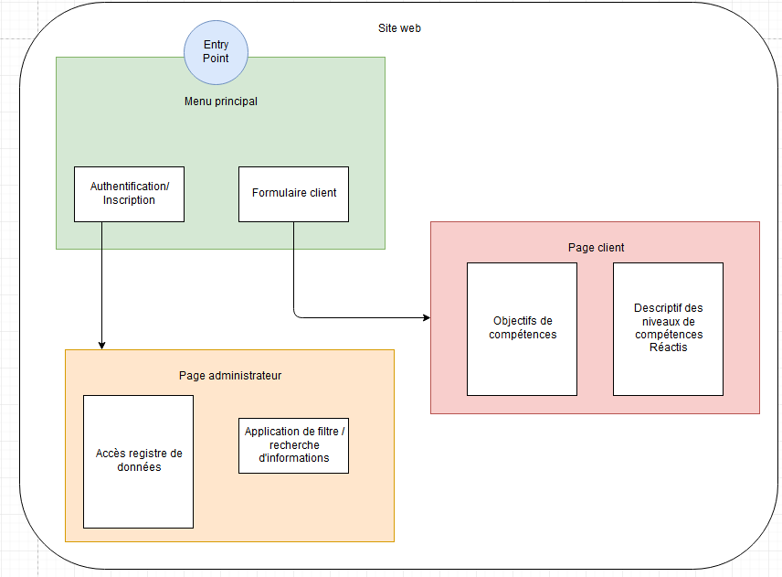
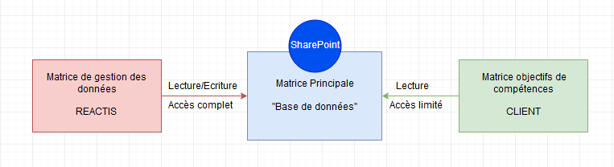

Du 29/07 au 09/08 j'ai été en autonomie en essayant de développer un outil pour la matrice de compétences. Je pouvais développer une matrice sur excel en VBA ou alors développer une BBD phpmyadmin gérable depuis un site web.
BDD phpmyadmin :
On s'y connecte avec un identifiant et un mot de passe prédéfini par l'administrateur du site.
Fonctionnalités de la BDD :
- Un menu principal qui présente un lien vers une page d’inscription/authentification ou vers un formulaire à remplir par le client. Dans ce formulaire est décrit l’ensemble des compétences qui vont être demandées par le client. Le client peut également proposer de nouvelles compétences dans ce formulaire
- Après l’authentification on distingue l’administrateur (Réactis) du client.
- La page administrateur contient l’ensemble des informations sur les compétences des collaborateurs. On a la possibilité de modifier ces données, en supprimer et ajouter de nouvelles informations. Il y a également un système de recherche via le nom des collaborateurs.
- La page client contient le descriptif des niveaux de compétences des collaborateurs correspondant aux compétences attendues. Le client ne peut pas modifier ces informations mais peut visualiser les avancées de l’ensemble des collaborateurs dans certains niveaux de compétences. Cependant il ne peut pas avoir accès à un descriptif détaillé par individu mais seulement par domaine de compétences. Il peut également proposer ses objectifs de compétences en termes de notations. Il ne peut observer que le niveau total des notes ainsi que les notes minimales qu’il aura demandé au préalable.
Paramétrage :
- On distingue Administrateur et client au niveau de l’authentification en effet le processus est différent.
- La page de visualisation des compétences est créée en fonction du formulaire qui a été rempli par le client.
Système d'autorisation :
- La méthode d’authentification doit pouvoir filtrer le client de l’administrateur. Seul les commerciaux et responsables techniques ont accès aux informations.
Matrice gérée en VBA :
C'est un ensemble de trois tableurs Excel liés depuis un SharePoint et gérés par une programmation en Visual Basic.
Fonctionnalités :
L’interface sera composée de différents éléments :
- Une matrice pour afficher ou rentrer les notes d’un individu.
- Un bouton « Réinitialiser » permettra de supprimer toutes les données rentrées dans ce menu (et non pas sur la matrice principale).
- Un bouton « Ajouter » permettra d’ajouter les données rentrées dans ce menu dans la matrice principale à partir d’une nouvelle colonne.
- Le bouton « Supprimer » permettra de supprimer la colonne sélectionnée.
- Le bouton « Modifier » permettra de modifier les données de la colonne sélectionnée.
- Le bouton « Rechercher » permettra de retrouver les données sur un individu grâce à son trigramme pour les afficher.
Paramétrage :
- On approxime la moyenne des notes au dixième près.
On définit une couleur rouge lorsque l’objectif de note est supérieur à la note obtenue et une couleur verte pour l’inverse.
J'ai pris une semaine de coupure et je suis parti une semaine en vacances du 12 au 18 août. Lors de la semaine du 19 au 23, j'ai et je vais développer ce site internet avec la BDD. Je ne pourrais certainement pas terminer, mais j'aurais déjà fait une partie du travail pour ce projet.